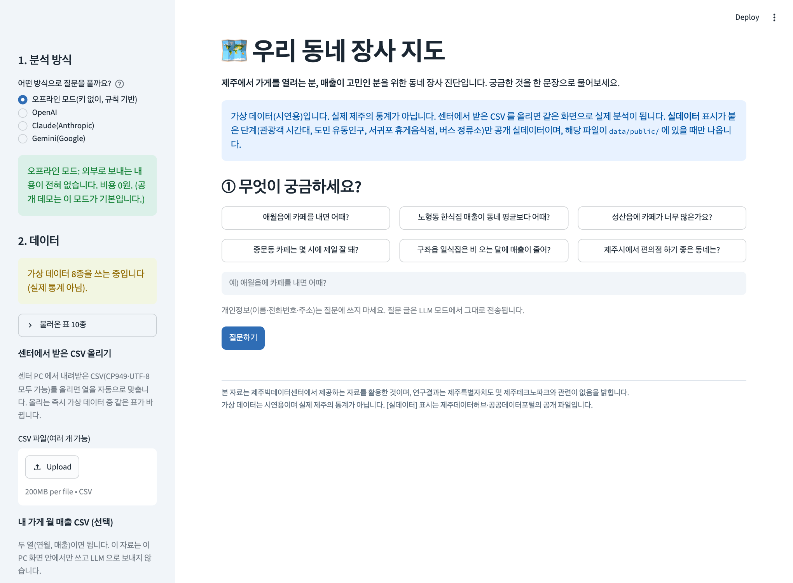
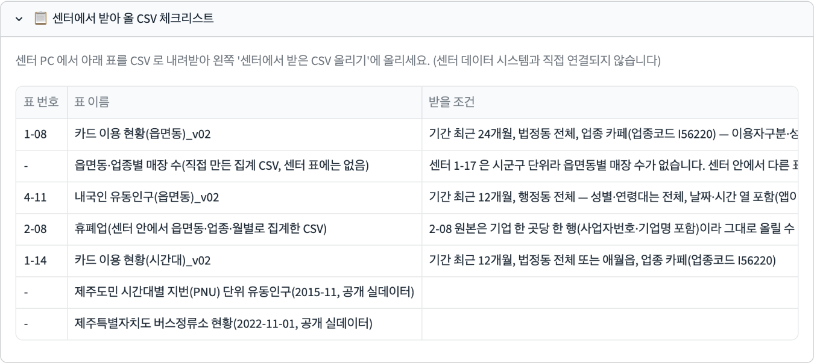
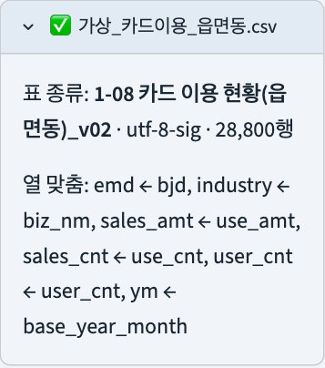
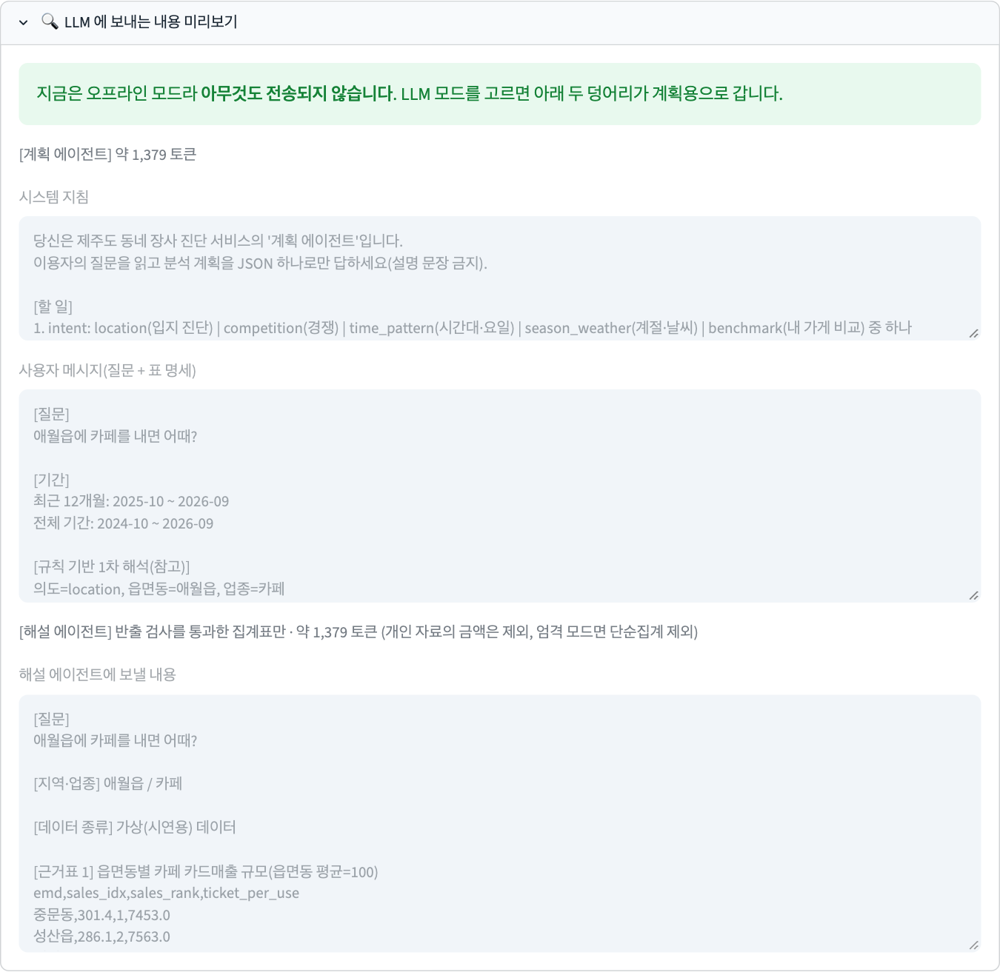
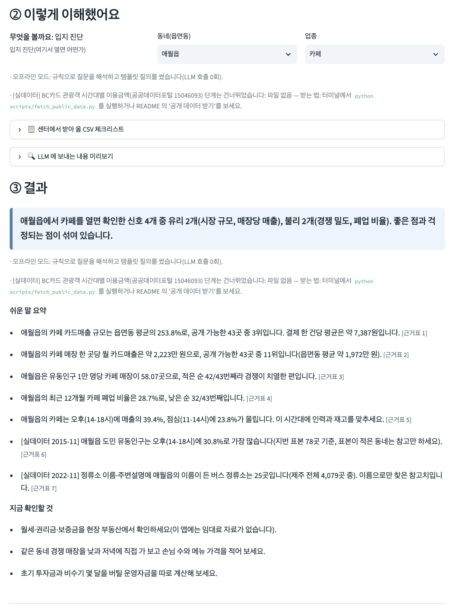
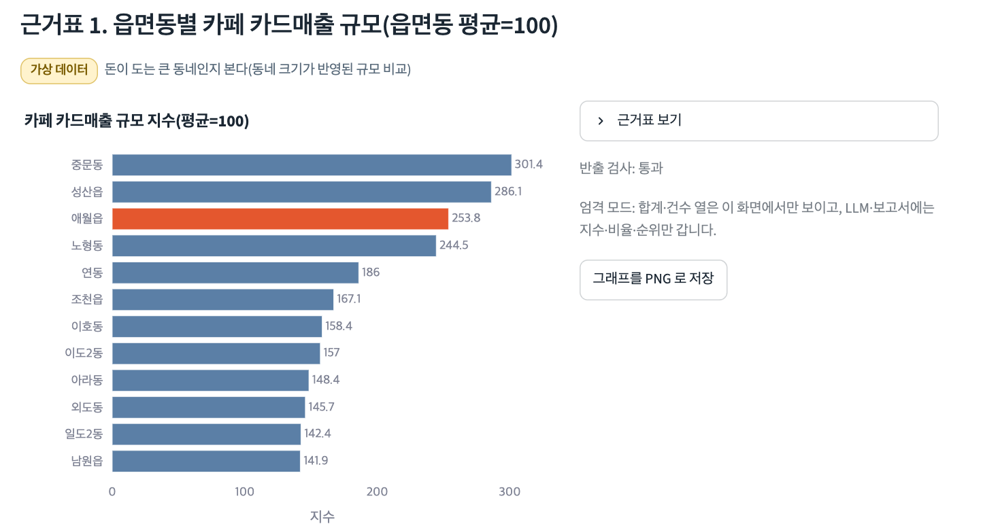

— 제주 동네 창업·장사 진단 AI Agent 센터 PC에서 키 없이 돌고, 반출 기준을 코드로 지키는 분석 도우미
팀명
AI특별시
대표 GitHub
https://github.com/ai-specialtime/jeju-jangsa-map
공개 데모
https://jeju-jangsa-map.streamlit.app (시연용, 가상 데이터)
문서 상태
초안 (2026-10-30 작성)
제출 예정일
2026년 11월
제출 대상
제주빅데이터센터 · 제주테크노파크
차례
요약 · 핵심 차별점 · 심사 항목 대응
2
1. 구현목표
3
2. 서비스 제안
4
3. Agent 개발 구성
6
4. 데이터 활용 계획
8
5. 개발·탑재 계획
10
6. 검증과 한계, 센터에 확인할 것
12
7. 사용 AI 모델 · AI 활용 범위 · 오픈소스
13
본 자료는 제주빅데이터센터에서 제공하는 자료를 활용한 것이며, 연구결과는 제주특별자치도 및 제주테크노파크와 관련이 없음을 밝힙니다.
화면·그래프의 숫자 대부분은 가상 데이터(시연용)이며 실제 제주의 통계가 아니다. 공개 실데이터를 쓴 단계에는 [실데이터] 표시가 붙는다.
요약
문제
제주에서 가게를 내려는 사람은 동네별 매출·유동인구·경쟁·폐업 자료를 한 번에 보기 어렵다. 센터에는 표가 73종 있으나, 어떤 표를 어떤 조건으로 받아 어떻게 묶는지는 비전문가가 알기 어렵다. 반출 불가 데이터는 외부 LLM으로 보낼 수도 없다.
해결
질문 한 문장을 쓰면 계획 에이전트가 필요한 표와 "센터에서 받아 올 CSV 체크리스트"를 안내하고 분석 SQL을 정한다. 로컬 도구(DuckDB)가 계산하고, 반출 기준 검사기(export_gate)를 통과한 집계만 해설 에이전트가 쉬운 문장·근거표 번호·한계로 풀어 준다. 1장 보고서와 분석 기록이 함께 나온다.
현황
1차 동작본 구현·자동 테스트 86개 통과(가상 데이터 + 공개 실데이터). 센터의 실제 CSV로는 아직 돌려 보지 못했다(센터 방문 전).
차별점 3줄
1
반출 기준을 코드로 구현했다. 2026.09.01 개정 기준에 따라 원본·10 미만 수치는 LLM·보고서로 나가지 않고, 엄격 모드가 기본이다(export_gate).
2
키 없이 끝까지 도는 오프라인 모드가 기본이다. 센터 비용 0원·외부 전송 0건·같은 질문은 같은 결과. 필요하면 OpenAI·Claude·Gemini 3사 중 선택한다.
3
도민이 쓰는 화면과 재현 가능한 기록을 함께 만든다. 예시 질문, CSV 체크리스트, 쉬운 문장+근거표+한계, 1장 보고서, 분석 기록(SQL·파일·행 수·gate 결과·비용), 테스트 76개.
심사 항목 대응표
평가항목(배점)
이 기획서의 답
해당 장
분석 주제의 타당성과 창의성 (15)
도민 체감이 큰 창업·장사 진단으로 주제를 좁혔다. 활용 목적: "이 동네에서 이 업종을 내도 되는가"에 근거를 붙여 답한다. 참신성: 반출 불가 데이터 환경에서도 LLM을 안전하게 쓰는 구조.
1, 3
필수 데이터 활용 적절성 (20)
센터 표 7종(카드 3·매장 수·유동인구·휴폐업·날씨)의 열 명세를 코드에 반영하고, 공개 실데이터 5개 표를 결합한다. 반출 가능 여부별로 쓰임을 구분한다. 이용조건의 불일치·미확인은 그대로 밝힌다.
4
AI Agent 기술성 및 완성도 (25)
계획 → 도구 실행 → 반출 검사 → 해설의 다단계 구조, 도구 5종, SQL 안전 검사 7겹, 실패 시 재시도 2회와 템플릿 대체, 해설 숫자 검증.
3
편의성 및 실용성 (25)
예시 질문 버튼 6개, 받아 올 CSV 체크리스트, CSV 열 자동 맞춤(CP949·UTF-8), 쉬운 문장+근거표+한계, 1장 보고서, 올린 자료 일괄 삭제, install.bat→run.bat 두 번 클릭.
2, 5
결과 신뢰성 및 재현성 (15)
모든 문장에 근거표 번호, 한계 문장, 가상/실데이터 표시, 분석 기록, 고정 시드·고정 버전, 생성 SQL 저장, 자동 테스트 86개. 못 한 검증은 6장에 적는다.
5, 6
핵심 차별점 5가지와 확인 방법
아래 항목은 모두 저장소에 구현돼 있다. 확인 방법은 심사자가 직접 해 볼 수 있는 순서로 적었다.
#
차별점과 내용
구현 위치 · 확인
①
반출 기준을 코드로 구현한 export_gate. 센터 데이터 반출 기준(2026.09.01 개정)을 규칙 7개로 옮겼다. 원천 행 차단, 식별 열 차단, 근거 건수 10 미만 칸 삭제, 응용집계(지수·비율·순위)만 반출, 형식 제한(그림·보고서). 엄격 모드가 기본이라 원본 불가 표의 합계·평균·건수는 센터 안 화면에서만 보이고 LLM·보고서로는 나가지 않는다. 기준값은 설정 파일 한 곳에서 바꾼다.
jangsa/tools/export_gate.py config/export_rules.yaml 테스트 9개
②
키 없이 도는 오프라인 모드 + LLM 3사 선택. 오프라인 모드는 규칙으로 질문을 읽고 템플릿 질의·템플릿 해설을 쓴다. 외부 전송 0건, 비용 0원. 센터가 API 비용을 부담하지 않아도 끝까지 시연된다. LLM 모드는 OpenAI·Claude·Gemini 중 고르고, 키는 화면 입력(저장 안 함) 또는 .env에서만 읽는다. 온도 0, 질문당 호출 최대 4회.
jangsa/llm/providers.py config/llm.yaml 화면 왼쪽 "분석 방식"
③
도민용 화면. 예시 질문 버튼 6개, 센터에서 받아 올 CSV 체크리스트(표 번호·표 이름·받을 조건), 쉬운 문장 요약+근거표 번호+한계, 1장 보고서(HTML, 그래프는 PNG), 올린 자료 일괄 삭제.
app.py docs/manual.md
④
분석 기록으로 재현. 실행한 SQL, 사용 파일, 행 수, gate 결과, LLM 호출 수·토큰·예상 비용을 화면과 파일(runs/*.json)에 남긴다. 기록에는 데이터 값이 없다. LLM이 만든 SQL은 저장해 같은 질문이 같은 SQL로 재현된다. 전송 직전 "LLM에 보내는 내용 미리보기"로 실제 전송문을 본다.
jangsa/runlog.py 화면 "⑤ 분석 기록"
⑤
테스트 76개. 반출 검사(9), SQL 안전(25), CSV 맞춤(8), LLM 공급자·대체 동작(12), 공개 데이터(3), 가상 데이터 재현(6), 오프라인 끝-끝(13). 가상 데이터 파일이 실행마다 바이트 단위로 같다.
tests/ pytest tests -q → 76 passed
1. 구현목표
대응 평가항목 분석 주제의 타당성과 창의성(15) · 일부 편의성 및 실용성(25)
1.1 분석 주제
"제주 동네 창업·장사 진단" — 제주에서 가게를 열려는 예비 창업자와 자영업자가 "이 동네에서 이 업종을 하면 어떤가", "우리 가게 매출이 동네 평균보다 어떤가"를 한 문장으로 묻고, 근거가 붙은 쉬운 답을 받는다.
왜 이 주제인가: 창업·자영업은 도민 체감이 크고, 카드·유동인구·휴폐업·날씨 표를 겹쳐야 답이 나온다. 표 하나로는 답이 안 되므로 "데이터 탐색부터 분석 결과 제공까지"를 하는 Agent의 일이다.
활용 목적: 입지·경쟁·시간대·계절·내 가게 비교 다섯 질문에 숫자 근거를 준다. 창업 여부는 대신 정하지 않고, "확인한 신호 4개 중 유리 2개, 불리 2개"처럼 근거표와 함께 보여 준다.
참신성: 반출 불가 데이터 환경에서 외부 LLM을 어디까지 쓸 수 있는지를 설계로 풀었다. 운영진 답변(2026-10-30)의 "반출 기준을 충족하는 범위의 집계값은 전송 가능"을 코드로 구현했다.
1.2 AI 데이터 분석 목표
질문 유형
예시 질문(화면의 예시 버튼)
보는 지표
입지 진단
"애월읍에 카페를 내면 어때?"
읍면동별 카드매출 규모 지수, 매장 한 곳당 월 매출, 유동인구 1만 명당 매장 수, 최근 12개월 폐업 비율, 시간대 비중(+[실데이터] 관광객 시간대·도민 유동인구·서귀포 휴게음식점·버스 정류소)
업종 경쟁
"성산읍에 카페가 너무 많은가요?"
시 단위 매장 수 추이, 유동인구 대비 매장 밀도, 폐업 비율, 매장당 매출
시간대·요일
"중문동 카페는 몇 시에 제일 잘 돼?"
시간대별·요일별 매출 비중, 월별 흐름, [실데이터] 관광객·도민 시간대
계절·날씨
"구좌읍 일식집은 비 오는 달에 매출이 줄어?"
월별 매출 흐름, 같은 달끼리 비교한 비 온 달 vs 적은 달 매출 지수
내 가게 비교
"노형동 한식집 매출이 동네 평균보다 어때?"
내 월 매출(이 PC 안에서만 사용)의 동네 내 백분위, 첫 달=100으로 맞춘 내 가게 vs 동네 흐름
범위: 제주시·서귀포시 43개 읍면동(제주시 26·서귀포시 17), 업종 9개(카페·한식·중식·일식·양식·간이음식·주점·편의점·베이커리). 치킨·분식은 센터 카드 표 업종코드(42개)에 따로 없어 가까운 업종을 고르게 안내한다.
1.3 달성 기준 (측정 가능)
항목
기준
현재(개발 PC, 가상 데이터)
끝까지 동작
예시 질문 6개가 키 없이 결론·그래프·근거표·한계까지 나온다
6개 모두 동작(분석 단계 2~8개)
반출 안전
LLM으로 가는 글에 원본 행·10 미만 수치가 없다
테스트 통과, 화면 미리보기로 확인
비용
오프라인 0원, LLM 모드 질문당 호출 4회 이하
구현됨(호출 상한 설정)
재현
같은 질문·같은 데이터 → 같은 SQL·같은 결과
테스트 통과(오프라인·LLM 모드 SQL 저장)
속도
질문 한 건 수 초 이내
데이터 불러오기 약 4초, 질문 1건 0.02~0.2초
속도·메모리(최대 약 360MB)는 macOS 개발 PC에서 잰 값이다. 센터 PC에서는 아직 재지 못했다.
2. 서비스 제안
대응 평가항목 편의성 및 실용성(25) · 필수 데이터 활용 적절성(20)
2.1 데이터 활용 개요
센터 PC에서 이용자가 센터 표를 CSV로 내려받아 앱에 올리면, 앱이 열을 자동으로 맞춰 로컬 DuckDB에서 질문에 맞는 집계를 한다. 센터 데이터 시스템에는 접속하지 않는다(운영진 답변: API 직접 연결 미지원). 공개 실데이터 4개 파일(5개 표)은 앱에 들어 있어 센터 표 없이도 [실데이터] 단계가 돈다. 자세한 표는 4장.
2.2 핵심 기능
#
기능
내용
1
질문 이해 확인
질문에서 질문 유형·동네·업종을 읽고 "이렇게 이해했어요"로 보여 준다. 틀리면 목록에서 고쳐 다시 분석한다. 동네나 업종을 못 읽으면 확인 전에는 분석하지 않는다.
2
받아 올 CSV 체크리스트
필요한 센터 표의 번호·이름·받을 조건(기간·업종코드 등)과 불러온 상태를 표로 안내한다(그림 2).
3
CSV 올리기·열 자동 맞춤
CP949·UTF-8 자동 판별, 열 이름 별칭·철자 유사도로 맞춤, 성별·연령대·이용자구분은 합산. 맞지 않으면 이유와 직접 고르기 화면. 기업 원본 행(사업자번호·기업명)은 올릴 수 없다.
4
결과 해설
한 줄 결론, 쉬운 문장 요약(문장마다 [근거표 N]), 그래프, 근거표, 한계 문장(그림 5, 6).
5
내 가게 비교
월 매출 두 열 CSV를 올리면 동네 평균과 견준다. 금액은 이 화면 안에서만 쓰고 LLM·보고서로 나가지 않는다.
6
보고서
1~2쪽 HTML(그래프는 PNG, 출처 문구·가상 데이터 표시 포함). 센터 밖 반출은 센터 심사를 거친다.
7
분석 기록·전송 미리보기
실행 SQL·사용 파일·gate 결과·LLM 호출 수·예상 비용. LLM에 실제로 가는 글을 미리 보여 준다(그림 4).
8
개인 자료 삭제
"올린 자료 모두 삭제" 한 번으로 올린 CSV와 저장한 보고서를 지운다. 올린 CSV는 처음부터 디스크에 쓰지 않는다.
2.3 편의성 (IT 비전문가 도민 기준)
설치·실행은 install.bat, run.bat 더블클릭이 전부다. 명령어를 쓰지 않는다.
예시 질문 버튼을 누르면 바로 분석한다. 직접 쓸 때는 "동네 + 업종 + 궁금한 것" 한 문장이면 된다.
"어떤 표를 받아야 하나"를 앱이 알려 준다. 용어는 "지수=읍면동 평균이 100", "비공개=근거 10 미만" 식으로 화면에 풀어 쓴다.
가상/실데이터를 단계마다 색 딱지로 구분한다. 키가 없거나 연결이 안 되면 자동으로 오프라인 방식으로 답한다.
2.4 분석 데이터 활용 방안 (센터 현장)
센터 방문 도민의 데이터 상담 창구용 도구: 질문을 받으면 체크리스트대로 받을 CSV를 안내한다. API 비용 없이 상시 운영(오프라인 모드)하고, LLM 모드는 센터가 키를 넣을 때만 켠다.
확장 계획: 외식업 POS 표(1-19~1-29), 단기체류 외국인 유동인구(4-15)를 질문 유형에 추가. 현재는 쓰지 않는다.
2.5 화면 구성

그림 1. 첫 화면. 예시 질문 버튼 6개, 분석 방식 선택(오프라인 기본), 센터 CSV·내 가게 CSV 올리기, 자료 삭제. 가상 데이터 안내와 출처 문구가 항상 보인다.

그림 2. "센터에서 받아 올 CSV 체크리스트". 표 번호·표 이름·받을 조건·구분·상태를 한 표로 안내한다. 센터에 없는 집계(읍면동별 매장 수)는 "직접 만든 집계(없어도 됨)"로 표시한다.

그림 3. CSV를 올리면 표 종류(1-08)와 열 맞춤(예: bjd→emd)을 자동으로 보여 준다.

그림 4. "LLM에 보내는 내용 미리보기"(위쪽만 잘라 보임). 오프라인은 전송 0건이라 안내하고, LLM 모드는 계획용 글(질문+표 명세)과 해설용 글(통과한 집계표)을 그대로 보여 준다.

그림 5. 결과 화면(가상 데이터). ② 이해한 내용, ③ 한 줄 결론과 쉬운 요약. 문장 끝 [근거표 N]은 아래 표·그래프로 이어진다.

그림 6. 근거표 1: 읍면동별 카페 카드매출 규모 지수(평균=100). "가상 데이터" 딱지, 반출 검사 결과, 엄격 모드 안내, PNG 저장 버튼이 붙는다.
3. Agent 개발 구성
대응 평가항목 AI Agent 기술성 및 완성도(25) · 결과 신뢰성 및 재현성(15)
3.1 역할·목표·Workflow
구성
역할·목표
입력 → 출력
계획 에이전트
질문을 읽고 어떤 표가 필요한지, 무엇을 계산할지 정한다. 목표: 도민이 표 이름을 몰라도 분석이 시작되게 한다.
질문, 표 명세 → 질문 유형·동네·업종, 체크리스트, 분석 단계(SQL·그래프)
도구 실행기
계획대로 로컬에서 계산한다. LLM이 개입하지 않는다.
CSV, 계획 → 집계표, gate 판정
해설 에이전트
통과한 집계만으로 쉬운 말 요약을 쓴다. 목표: 숫자 근거와 한계를 같이 보여 준다.
반출용 집계표 → 결론·요약·한계
Workflow 질문 입력 → (계획 에이전트) 질문 유형·동네·업종 해석 → 이용자 확인(필요할 때) → 필요한 표·체크리스트 → CSV 올리기·열 맞춤 → 단계별 SQL 실행 → export_gate → (해설 에이전트) 요약 → 결과·보고서·분석 기록.
3.2 Agent 구조 (계획 → 실행 → 검사 → 해설)
그림 7. Agent 구조. 데이터(입력 데이터·도구 실행기)는 센터 PC 안에만 있다. 점선 화살표 ①②만 외부 LLM으로 향하며, 원본 행과 10 미만 수치로 가는 화살표는 없다.
3.3 사용 모델
모드
모델
비고
오프라인(기본)
모델 없음. 규칙(키워드·허용 목록)과 템플릿 문장
외부 전송 0건, 비용 0원, 항상 같은 결과
OpenAI
gpt-4o-mini (기본값)
화면에서 모델 이름 변경 가능. 단가는 config/llm.yaml(공급자 요금표 확인 필요)
Claude(Anthropic)
claude-haiku-4-5 (기본값)
Gemini(Google)
gemini-2.5-flash (기본값)
로컬 소형 LLM(Ollama 등)은 아직 없다(확장 계획). GTX 1060은 쓰지 않는다. 비용은 아래 표처럼 작다(추정).
공급자·모델
단가(USD/100만 토큰, 입력·출력)
질문 1건 추정
OpenAI gpt-4o-mini
0.15 · 0.60
약 $0.0014 (약 2원)
Claude haiku-4-5
1.00 · 5.00
약 $0.0105 (약 15원)
Gemini 2.5-flash
0.30 · 2.50
약 $0.0047 (약 7원)
추정 근거: 화면 미리보기의 입력 토큰 추정치(계획 약 1,560 + 해설 약 1,450 ≒ 3,000)와 출력 1,500토큰 가정, 환율 1,400원. 실제 호출 값은 아직 재지 못했다. 분석 기록 화면이 실제 호출의 토큰·비용을 보여 준다.
3.4 Tool / API
도구
기능
파일
csv_profile
인코딩(UTF-8·BOM·CP949)·구분자 판별, 열 이름 정규화→별칭→포함→철자 유사도 매핑, 값 정리(연월·숫자·읍면동·업종 동의어), 필수 열·변환 실패·모르는 읍면동 비율 검증
jangsa/tools/csv_profile.py
sql_run
한 문장·SELECT/WITH만, 쓰기·파일·시스템 함수 차단, DuckDB 파서로 재확인, 허용된 표만, 집계 강제, LIMIT 강제, 연결 자체가 파일·네트워크 접근 불가(enable_external_access=false)
jangsa/tools/sql_run.py
export_gate
아래 3.5 규칙 R1~R7
jangsa/tools/export_gate.py
chart
같은 그래프 정의로 화면(plotly)과 그림 파일(PNG, matplotlib)을 만든다. 통과한 표만 그린다
jangsa/tools/chart.py
benchmark
내 가게 월 매출을 같은 업종·동네 매장당 월 매출 분포에 견준 백분위, 동네 흐름과 비교
jangsa/tools/benchmark.py
외부 API(선택)
OpenAI·Anthropic·Gemini REST. SDK 없이 표준 라이브러리 urllib로 호출, 온도 0, 출력 2,000토큰·60초 제한
jangsa/llm/providers.py
3.5 판단 및 자율 수행 범위 · 안전장치
구분
내용
Agent가 스스로
질문 유형 판단, 필요한 표 선택, 분석 단계·SQL 작성(LLM 모드), 그래프 종류 선택, 실패한 SQL 수정(최대 2회), 계속 실패하면 템플릿 질의로 대체
이용자 확인 후
동네·업종 확정(확인 단계 1회), 내 가게 자료 사용, LLM 모드 켜기와 키 입력, 보고서 저장
하지 않는 것
센터 시스템 접속·자동 내려받기, 원본 행 표시·전송, 쓰기·삭제·파일 SQL, 창업 여부의 결정, 키 저장
규칙
export_gate 검사 내용 (config/export_rules.yaml)
R1
원천 행 차단: 결과 행이 원천 표의 60% 초과 또는 200행 초과면 차단
R2
식별 열 차단: 격자·좌표·카드번호·가맹점명·사업자 등의 열 이름
R3
단순집계(합계·평균)가 있는데 근거 건수 열이 없으면 확인 불가로 차단
R4
근거 건수 10 미만 행의 단순집계는 삭제 처리(범주·비식별 처리로 바꿀 수 있음)
R5
응용집계(지수·비율·순위)는 수치 반출 가능. 자체 강화로 근거 3 미만이면 가림(특정 가게 식별 방지)
R6
반출 형식: 원본 불가 표는 그림(PNG)·보고서만, 반출 가능 표·공개 데이터는 CSV 버튼 허용
R7
엄격 모드(기본): 원본 불가 표의 합계·평균·건수는 센터 안 화면에서만 보이고 LLM·보고서·PNG에는 지수·비율·순위만 간다
해설 문장의 숫자는 보낸 표에 있는 값인지 확인하고(단위 변환 포함), 표에 없는 숫자가 많으면 LLM 해설을 버리고 템플릿 해설로 바꾸며 그 사실을 화면에 적는다. 키는 화면 입력 또는 프로젝트 루트 .env에서만 읽고 시스템 환경변수·다른 폴더의 키 파일은 찾지 않는다.
4. 데이터 활용 계획
대응 평가항목 필수 데이터 활용 적절성(20) · 결과 신뢰성 및 재현성(15)
4.1 사용하는 센터 표 (방문 이용, CSV)
열 명세는 제주데이터허브 데이터명세서 v12(2026.1.28)와 반출 기준 PDF(2026.09.01 개정)에서 확인했다. 반출 열은 원본·발췌 / 단순집계 / 응용집계 순이다. 개발·시연은 가상 데이터로 하고, 센터 CSV를 올리면 같은 코드가 실제 분석을 한다.
* 단순집계는 "10 미만 수치 불포함 시" 반출 가능. 문서 4쪽과 10쪽의 해석이 달라 엄격 모드를 기본으로 했다(6장). 카드 표 업종코드: 카페 I56220, 한식 I56111, 중식 I56112, 일식 I56113, 양식 I56114, 간이음식 I56192, 주점 I56211+I56219, 편의점 G47122, 베이커리 G47215. 시간대는 카드 표 기준 5구간이며 외식 POS 7구간과 직접 비교하지 않는다. 카드 표는 법정동, 유동인구는 행정동이라 대응표(config/tables.yaml, 확실한 것만 넣은 초안)로 맞추고 못 맞춘 동은 경고 후 뺀다. 외식업 POS(1-19~1-29)·단기체류 외국인 유동인구(4-15)는 쓰지 않는다(확장 계획).
4.2 공개 실데이터와 이용조건
제주데이터허브·공공데이터포털에서 로그인 없이 받은 공개 파일이다(data/public/). 저장소(공개 GitHub ai-specialtime/jeju-jangsa-map)에는 이용조건이 "이용허락범위 제한 없음"으로 확인된 파일만 두고, 확인 못 했거나 안내가 어긋나는 2종(아래 앞 두 줄)은 scripts/fetch_public_data.py로 원래 공개 주소에서 받는다(파일이 없으면 그 [실데이터] 단계만 "파일 없음 — 받는 법" 안내로 건너뛰고 나머지는 그대로 돈다). 제출 zip에는 운영진 답변(2026-10-30)에 따라 공개 원본을 포함할 수 있다. 앱에서는 [실데이터] 표시를 붙이고 가상 데이터와 섞어 하나의 값으로 계산하지 않는다.
앱 표
파일 · 출처
이용조건 (조사 원문)
쓰임 · 한계
cafe_license
제주특별자치도_서귀포시_휴게음식점현황_20230331.csv (1,441행) · 제주데이터허브 id 1306
확인 못 함(허브에 표기 없음, data.go.kr 링크 404) → 저장소 제외, 받기 스크립트
서귀포시 읍면동별 카페·베이커리·간이음식 신고 업소 수. 업소명으로 분류, 주소의 읍면동으로 지역 판정(주소 판정 1,206곳, 집계 302곳). 서귀동 등 일부는 못 정해 제외
정류소 이름·주변설명에 동네 이름이 든 정류소 수(참고). 정류소 ID가 센터 3-03·3-04와 같은 체계인지 확인 필요해 ID로 조인하지 않음
저장소에 들어 있되 쓰지 않은 공개 파일(이용조건 확인됨): 기상개황(일 단위 시계열 아님), 버스 노선 현황 2종, 음식점 위생등급, 250m·300m 격자 도민 유동인구(읍면동 정보 없음). 받았으나 저장소에는 넣지 않은 파일: 소상공인 BSI, 숙박·관광지·음식점 샘플, 인증 표시 표의 미리보기 샘플 8종. 대회 동의사항: 대회 데이터는 비영리 목적만, 외부 데이터는 공개하고 출처를 밝힌다.
4.3 수집·전처리·분석 흐름
#
단계
내용
1
수집
이용자가 센터 PC에서 표를 CSV로 내려받아 올린다(체크리스트가 조건 안내). 공개 실데이터와 가상 데이터는 앱 폴더에 들어 있다.
DuckDB 메모리 표에 올려 계획 SQL 실행(sql_run의 안전 검사 통과). 개인 자료는 디스크에 쓰지 않는다.
7
반출 검사
export_gate(4.5), 통과한 표만 그래프·해설·보고서·LLM으로 간다.
8
기록
분석 기록 저장(SQL·파일·행 수·판정, 데이터 값 없음)
4.4 가상 데이터
센터 표 실제 CSV를 받기 전에 개발·시연하기 위해 scripts/make_synthetic.py(고정 시드 20261030)가 센터 명세의 열 이름·값 형식으로 만든다. 43개 읍면동, 업종 9개, 2024-10~2026-09 월별. 관광 읍면은 여름·주말이 높고 도심은 평일 점심·저녁이 높게, 추자·우도 등은 매장이 적어 "10 미만" 가림이 실제로 걸리게 맞췄다. 모든 파일에 가상_ 접두사와 데이터구분=가상 열이 있고, 화면·보고서에 "가상 데이터"를 표시한다. 같은 시드는 바이트 단위로 같은 파일을 만든다(테스트). 가상 데이터는 제출물에 넣고, 설치 때 만든 파일을 쓴다(용량 때문에 저장소에는 큰 파일을 넣지 않음).
4.5 반출 기준과 구현
기준(센터 반출 기준 2026.09.01 개정)
구현
원본·발췌 반출 불가
결과 행 비율·행 수 제한, 식별 열 차단, 기업 원본 행 CSV는 올리기 거절
단순집계는 10 미만 수치 불포함
근거 건수 10 미만 행의 합계·평균·건수를 삭제 처리(min_count: 10)
응용집계(지수·비율·순위)는 수치 포함 가능
지수·순위·비율 열은 보임. 근거 3 미만이면 가림(applied_min_support: 3, 자체 강화)
시각화는 PNG·JPG만
보고서 그래프는 PNG. SVG·HTML 그래프는 반출용으로 만들지 않음
csv·txt·엑셀 반출 원칙 불가
원본 불가 표 결과는 PNG·보고서만. CSV 저장 버튼은 반출 가능 표·공개 실데이터 결과에만
소스코드·로그에 데이터 샘플 출력 금지
분석 기록에는 SQL·행 수·판정만 저장
여기서 구현한 해석은 센터 담당자 확인 전의 초안이다. 센터가 다르게 해석하면 config/export_rules.yaml만 바꾼다.
4.6 출처 표기
본 자료는 제주빅데이터센터에서 제공하는 자료를 활용한 것이며, 연구결과는 제주특별자치도 및 제주테크노파크와 관련이 없음을 밝힙니다.
이 문구는 앱 화면 하단과 보고서에 항상 표시한다. 공개 실데이터는 제공 기관(제주특별자치도·BC카드·공공데이터포털)과 파일명을 분석 기록의 "사용한 파일"에 남긴다.
5. 개발·탑재 계획
대응 평가항목 결과 신뢰성 및 재현성(15) · AI Agent 기술성 및 완성도(25) · 편의성 및 실용성(25)
5.1 구현 범위
구분
내용
구현 완료(1차 동작본)
질문 유형 5종, 도구 5종, 계획·해설 에이전트(오프라인·LLM 3사), 센터 표 7종(+이용자 집계 1·내 가게 CSV)·공개 실데이터 5표 연결, 반출 검사 엄격 모드, Streamlit 화면, 보고서(HTML), 분석 기록, 설치·실행 스크립트, 매뉴얼, 테스트 76개
제출 전 할 일
센터 실제 CSV 형식 대조, Windows 11 실기 설치 점검, 평가용 질문 정답 대조(직접 SQL과 비교), LLM 모드 실제 호출 시험, 아래 6장 확인 사항 정리
확장 계획(현재 없음)
외식업 POS·단기체류 외국인 유동인구 표 추가, 일별 날씨·버스 이용 실데이터 연결, 로컬 소형 LLM(Ollama), 센터 표 카탈로그 기반 "처음 온 이용자용 데이터 찾기"
5.2 기술 환경 · UI
항목
내용
센터 PC
Windows 11, Intel Core i7-8700, GTX 1060, RAM 32GB. 이 앱은 CPU만 쓰고 GPU가 필요 없다. 메모리 사용은 개발 PC에서 데이터·분석 부분 최대 약 470MB(세션 3개 동시, 화면 제외).
언어·런타임
Python 3.11 단일 스택. torch·Docker·WSL을 쓰지 않는다.
UI
Streamlit 로컬 웹 화면(127.0.0.1, 기본 포트 8501), 센터 PC 브라우저에서 연다. 외부에 공개하지 않는다.
저장
데이터는 DuckDB 메모리. 디스크에는 분석 기록(runs/, 값 없음)과 이용자가 저장을 누른 보고서(reports/)만 쓴다.
5.3 센터 PC 설치·실행
#
단계
내용
0
사전 설치(센터)
Python 3.11 설치, 5.4의 패키지 목록 허용. 센터는 기획서에 적힌 것만 설치해 주므로 아래 목록 전체를 적었다.
1
install.bat 더블클릭(처음 한 번)
[1/3] 가상환경 .venv 생성 → [2/3] requirements.txt 고정 버전 설치 → [3/3] 가상 데이터 생성(고정 시드, 개발 PC에서 약 10초)
2
run.bat 더블클릭
가상환경의 Streamlit으로 app.py를 127.0.0.1에 띄우고 브라우저가 열린다(통계 수집 끔). 검은 창을 닫으면 끝난다.
3
사용
예시 질문 → 이해 확인 → 체크리스트 → 센터 CSV 올리기 → 결과·보고서·분석 기록 → "올린 자료 모두 삭제"
4
공개 데모(선택)
Streamlit Community Cloud(https://jeju-jangsa-map.streamlit.app)에 같은 app.py를 올린 시연용(Python 3.11, 소스는 대표 GitHub ai-specialtime/jeju-jangsa-map). 오프라인 모드가 기본이고 가상 데이터를 첫 실행 때 자동 생성하고, 저장소에 없는 공개 파일 2종(휴게음식점·BC카드)은 첫 실행 때 원래 공개 주소에서 받아 쓴다(실패하면 그 [실데이터] 단계만 건너뜀). LLM 키는 그 세션의 메모리에만 두고 서버에 저장하지 않는다. 센터 PC 실행과는 별개다.
매뉴얼은 docs/manual.md(도민용 9개 절). 오류 대응 표 포함.
5.4 설치 패키지 전체 목록 (고정 버전)
Python 3.11.x(개발 검증 3.11.13)와 아래 requirements.txt 8개 패키지. 이 8개를 설치하면 pip가 의존 패키지 39개를 함께 받는다. 센터가 모든 패키지를 사전에 허용해야 하므로 깨끗한 환경에 requirements.txt만 설치한 뒤 만든 pip freeze 전체를 적는다(macOS·Python 3.11.13 기준 47개). 이 전체 고정 목록은 저장소의 requirements-lock.txt에 있다.
Windows에서는 colorama 등 몇 개가 더 붙을 수 있다(Windows 11에서 실제로 설치해 보고 목록을 최종 확정할 예정). 테스트용 pytest 9.2.0(requirements-dev.txt)은 센터 설치에 필요 없다. 패키지 내려받기를 위해 PyPI 접근이 필요하며, 막혀 있으면 센터가 사전 설치하거나 허용 목록에 넣어 주어야 한다(install.bat이 이 경우 안내 문구를 띄운다).
5.5 외부 서비스 의존성
항목
내용
필수 외부 의존
없음. 오프라인 모드는 설치 후 인터넷 없이 끝까지 돈다.
선택: LLM API
api.openai.com, api.anthropic.com, generativelanguage.googleapis.com 중 쓰는 공급자 하나. 센터가 외부 LLM API 호출을 허용한다는 운영진 답변(2026-10-30)에 따른다. 센터 방화벽에서 해당 도메인 허용이 필요하다.
API 키 설정
방법 1: 화면 "분석 방식"에서 공급자 선택 후 키 입력(저장 안 함). 방법 2: .env.example을 .env로 복사해 키 입력. 제출물에는 키가 없다. 비용 관리: 저가 모델 기본값, 질문당 호출 4회 상한, 분석 기록에 호출 수·토큰·예상 비용 표시.
5.6 오류·제약 (자세한 대응은 매뉴얼 9절)
증상·제약
대응
CSV 글자 깨짐
엑셀에서 "CSV UTF-8(쉼표로 분리)"로 다시 저장. CP949·UTF-8은 자동 판별
필수 열을 찾지 못함
표 종류를 직접 고르고 빠진 열을 골라 "다시 맞추기"
"비공개"로 보이는 칸
근거 건수 10 미만이라 반출 기준에 따라 가린 것(정상 동작)
읍면동별 매장 수·폐업률
센터 1-17은 시 단위, 2-08은 기업 원본 행이라 센터 안에서 집계한 CSV가 있을 때만 쓰인다. 없으면 그 단계는 빠지고 카드·유동인구 위주로 분석
키가 없거나 API 오류
자동으로 오프라인 방식으로 답하고 화면에 알린다
브라우저가 안 열림
주소창에 http://localhost:8501
6. 검증과 한계, 센터에 확인할 것
대응 평가항목 결과 신뢰성 및 재현성(15) · 필수 데이터 활용 적절성(20)
6.1 수행한 검증
검증
내용
자동 테스트 76개
반출 검사 9(10 미만 삭제·범주·비식별, 임계값 변경, 엄격 모드, 원본 행·식별 열 차단, 반출 가능 표 예외) · SQL 안전 25(쓰기·파일 읽기·확장 거부, LIMIT 강제, 연결의 파일 접근 차단) · CSV 맞춤 8(인코딩, 별칭, 기업 원본 거절, 빈 파일) · LLM 12(요청 형식 3사, 키 없음, 전송문에 데이터 값 없음, SQL 2회 재시도 후 템플릿 대체, 안전하지 않은 SQL 미실행, 지어낸 숫자 해설 대체) · 공개 데이터 6(도민 유동인구 값이 0이 되지 않는 회귀 테스트, 빈 폴더) · 가상 데이터 6(같은 시드=같은 파일) · 오프라인 끝-끝 16(예시 질문, 보고서의 출처 문구·PNG·단순집계 열 없음, 공개 파일이 없을 때 "파일 없음 — 받는 법" 안내로 건너뜀)
결과의 근거 표시
모든 요약 문장에 근거표 번호, 한계 문장, 가상/실데이터 딱지, 소수 칸 "비공개"
재현
고정 시드·고정 버전, 오프라인 모드는 같은 질문에 같은 결과, LLM 모드는 생성 SQL 저장, 분석 기록 파일
6.2 하지 못한 검증 (제출 전 수행 예정)
센터의 실제 CSV로 실행: 열 이름은 명세서로 맞췄으나 실제 파일로는 못 돌렸다. 다르면 config/tables.yaml의 별칭 한 곳에서 고친다.
Windows 11 실기 설치: 설치·실행은 macOS에서 확인했다. install.bat·run.bat은 작성했지만 Windows에서 돌려 보지 못했다.
LLM 모드 실제 호출: 요청 형식·응답 해석·실패 대체는 가짜 전송으로 시험했고, 실제 외부 API 호출 시험은 하지 않았다.
평가용 질문의 정답 대조: 직접 SQL과 결과를 비교하는 검증표는 아직 없다.
6.3 알려진 한계
한계
내용
화면의 숫자 대부분이 가상
실제 제주 통계가 아니다. 센터 CSV를 올려야 실제 분석이 된다.
카드 결제 금액만 반영
현금·계좌이체 매출은 빠진다. 과거 자료이며 미래를 보장하지 않는다. 임대료·권리금 자료가 없다.
공개 실데이터의 시점·범위
관광객 카드(2015-09~2016-08, 전 업종), 도민 유동인구(2015-11), 휴게음식점(서귀포시만, 2023-03), 버스 정류소(이름 기반 참고치). 현재 상권과 다를 수 있다.
도민 유동인구 [실데이터] 단계
읍면동 38곳 중 28곳의 그래프가 비던 결함은 수정함(원인: 시각별 "유동인구" 열과 "유동인구 비율" 열이 둘 있는데 비율 열 값이 덮어써 소수 둘째 자리 반올림에서 0이 됨 → 사람 수 열만 사용). 회귀 테스트로 막았고, 애월읍 5개 시간대 모두 값이 나온다.
업종 분류
센터 카드 업종코드 42개에 치킨·분식이 없다. 가까운 업종(간이음식 등)을 고르게 안내한다.
법정동→행정동 대응
확실한 것만 넣은 초안. 매핑 안 되는 동은 경고 후 분석에서 빠진다.
일별 날씨·버스 이용(승하차)
공개 파일이 없어 날씨 단계는 가상 데이터, 버스 이용은 쓰지 않는다.
6.4 센터에 확인할 것
#
질문
현재 처리
1
반출 기준 문서의 4쪽과 10쪽이 다르다. 4쪽은 원본 불가 데이터의 읍면동 단위 총합·평균도 반출 불가가 원칙이라 하고, 10쪽은 같은 표의 단순집계를 10 미만 불포함 시 반출 가능이라 한다. 어느 쪽인가?
엄격 모드(4쪽 우선)가 기본. 센터가 10쪽대로 허용하면 설정 한 줄(strict_mode: false)로 바꾼다.
2
응용집계(지수·순위)가 소수 읍면동 값을 역산하게 하지 않는가? 자체 기준(근거 3 미만 가림)이 충분한가?
자체 강화 기준 3 적용
3
카드 표(법정동)와 유동인구(행정동)를 맞출 센터의 행정구역 대응표가 있는가?
초안 대응표 사용
4
센터 표의 실제 CSV 열 이름·인코딩·행 수, 내려받기 용량·건수 한도는?
명세서 열 이름 기준, 별칭으로 흡수
5
영리 목적 사용 시 제공처 협의(PDF)와 통계정보 상업적 활용 허용(이용약관 8조)의 관계는?
대회·시연은 비영리 전제
6
결과물 소유권: 규칙 탭 "센터에 소속"과 동의사항 "저작권은 참가자"의 충돌을 어떻게 읽는가?
외부 코드를 복사하지 않고 본 대회용으로 새로 작성
7
센터 3-03·3-04의 정류소 ID(7자리)와 공공데이터포털 버스정류소 ID(9자리)가 같은 체계인가?
ID로 조인하지 않음
8
센터 PC의 Python 3.11 설치, PyPI 접근 또는 5.4 패키지 사전 설치, 브라우저 종류·버전, LLM API 도메인 3개 허용은 가능한가?
5.3·5.5에 요구사항 명시
9
이용자가 만든 보고서(HTML·PNG)를 센터 밖으로 가져가는 반출 신청 절차와 형식 제한은?
보고서는 PNG·지수·비율 중심으로만 구성
10
공개 파일 이용조건: 서귀포시 휴게음식점 현황의 라이선스, BC카드 자료의 공공누리 유형(자유이용 vs 4유형)은?
이용조건 미확인·불일치를 4.2에 명시
7. 사용 AI 모델 · AI 활용 범위 · 오픈소스
대회 규정상 명시 항목: 사용 AI 모델, AI 활용 범위, 외부 API·서비스, 외부 데이터, 오픈소스·외부 코드
7.1 사용 AI 모델
구분
내용
앱 실행 중(런타임)
오프라인 모드(기본): AI 모델 없음. LLM 모드(선택): gpt-4o-mini(OpenAI), claude-haiku-4-5(Anthropic), gemini-2.5-flash(Google) 중 이용자가 고른 하나. 모델 이름은 화면에서 바꿀 수 있다.
개발 과정
코드·문서 초안 작성에 생성형 AI 코딩 도구를 사용했다(저장소 커밋 기록에 공동 작성자 Claude Sonnet 5.5 표기). 구현 범위와 사실은 저장소 파일과 테스트로 확인한다. [팀 확인 후 도구·모델 표기 확정]
7.2 AI 활용 범위
단계
AI를 쓰는가
범위
질문 해석·계획
LLM 모드에서만
질문 유형·동네·업종·분석 단계·SQL 제안. 허용 목록·SQL 안전 검사를 통과해야 실행. 오프라인은 규칙
데이터 계산
아니오
DuckDB·pandas가 계산(AI 생성 숫자 없음)
반출 검사
아니오
규칙 코드
해설 문장
LLM 모드에서만
통과한 반출용 표로 쓴다. 숫자가 표에 없으면 템플릿 해설로 교체
그림·이미지
아니오
그래프는 코드로 그린다. 이 문서의 Agent 구조 도식은 직접 그렸고, AI 생성 이미지를 쓰지 않았다. 화면 그림은 앱의 실제 캡처
7.3 외부 서비스·외부 데이터·외부 코드
구분
내용
외부 API(선택)
OpenAI·Anthropic·Google Gemini REST API (4.2·5.5 참고). 이용약관은 각 서비스 약관
외부 데이터
제주데이터허브·공공데이터포털 공개 파일 4개(표 5개): 서귀포시 휴게음식점 현황, BC카드 개별관광 지역별 분석(2개 표), 제주도민 시간대별 유동인구(PNU), 버스정류소 현황. 센터 표는 이용자가 센터에서 내려받아 올린다.
외부 코드
없음. 남의 코드를 복사하지 않았다.
7.4 오픈소스 목록
이름
버전
용도
라이선스
Python
3.11.x
실행 환경
PSF License
Streamlit
1.66.1
화면
Apache-2.0
DuckDB
2.0.0
로컬 SQL
MIT
pandas · NumPy
3.1.0 · 2.4.6
표 처리
BSD-3-Clause
Plotly · Matplotlib
7.1.0 · 3.11.2
화면 그래프 · 보고서 PNG
MIT · Matplotlib License
PyYAML · pydantic · pytest(개발용)
6.0.3 · 2.14.2 · 9.2.0
설정 · 모델 · 테스트
MIT
그 밖의 의존 39개
5.4 목록
위 패키지가 함께 설치
MIT·BSD·Apache-2.0·PSF 등 허용형(certifi만 MPL-2.0)
47개 전체의 라이선스를 깨끗한 임시 환경에서 pip-licenses로 뽑아 확인했다. GPL·LGPL·AGPL류는 없다. 패키지별 표는 저장소 docs/data-usage.md 6절, 고정 목록은 requirements-lock.txt.